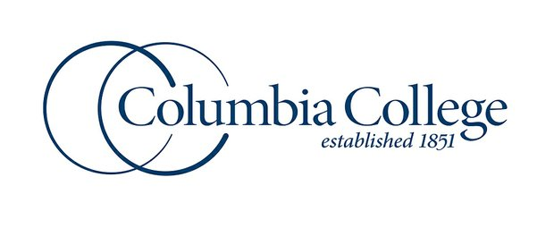

Columbia College
Columbia College & Cougar Inn
The hotel has a long history of relationship with Columbia College. That’s how the hotel got its name. In fact, many of their customers are parents of Columbia College who visit their children on campus, or alumni of the college. They have been a strong sponsor of Cougar Team since it was founded in 1996.
Founded in 1851, Columbia College has been helping students advance their lives through higher education for more than 160 years. As a private, nonprofit, coeducational liberal arts and sciences college, the college takes pride in its small classes, experienced faculty and quality educational programs. Originally founded as Christian Female College, the college was the first women's college west of the Mississippi River to be chartered by a state legislature. The college changed its name to Columbia College in 1970 when it transitioned from a two-year women's college to a four-year coeducational college. Though Columbia College has retained a covenant with the Christian Church (Disciples of Christ) since its inception, the college is a nonsectarian school welcoming students of all religious denominations. Through its network of campuses in 36 nationwide locations, the Day Campus and Evening Campus in Columbia, Mo., and the Online Campus, the college serves more than 29,000 students annually.
you can get information on Columbia Cougars here.